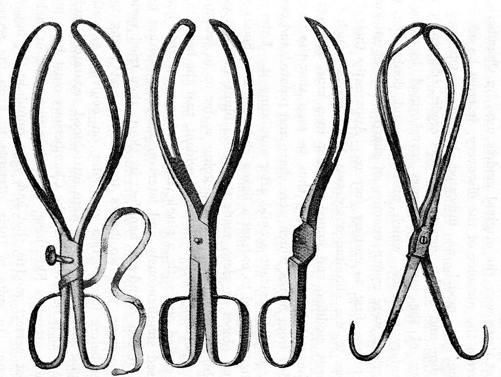

Creative brains are a valuable, limited resource. They shouldn't be wasted on re-inventing the wheel when there are so many fascinating new problems waiting out there.
To behave like a hacker, you have to believe that the thinking time of other hackers is precious — so much so that it's almost a moral duty for you to share information, solve problems and then give the solutions away just so other hackers can solve new problems instead of having to perpetually re-address old ones.
quality
if nobody can examine the code, how do we know this medical device is:
safe?
secure?
adequately tested?
We Don't: "The Alchemist Says It Works"
improvements
if you want to improve something and have the skills, with OSS you can
if you want to improve something and don't have the skills, with OSS you can hire someone to do it
if you improve something, it can be shared with the community
and in return you get to share community developments too
clinicians not directly employed in software are more likely to contribute to an open source project than a closed source product
the NHS and OSS
NHS has an intrinsically Sharing philosophy
we share the risk of illness and derive protection from this
we share medical knowledge (eg journals, conferences)
we share organisational knowledge (eg networks)
NHS staff readily comprehend the idea and benefits of OSS
The Chamberlen Forceps

open source myths
"open source is free, so it's anti-commercial"
"you can't make money with open source"
"open source is for hackers and weirdos"
"anyone can change your code so it's insecure!"
"companies just won't make their software open"
the reality
open source is 'the age of reason' brought to computing
represents 'saved progress' in the game
shares progress in the NHS
there is no other safe and scientific way to do medical computing
it is an opportunity not a threat, you just need the right business model
the NHS is particularly fertile ground
(artist's impression)
This presentation was built in the open source framework reveal.js